Acceptus
Responsive OpenCart theme for your successful online store
By Kulerthemes
As nowadays selling is conducted over electronic systems, with our latest template which beautifully displays to all mobile devices, you will be able to process transactions from users of PCs, tablets and handheld devices!
Create an outstanding online store today with Acceptus and start selling without any barriers in layout or design. If you are ready to bring your business online, then get started today and enjoy your endless fortune !
Compatible from OpenCart 1.5.4.x to OpenCart 1.5.6.x
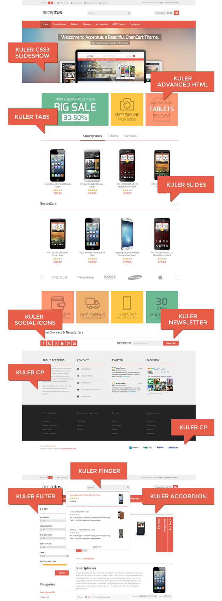
How to install Acceptus?
You don’t have to overwrite or modify OpenCart core files when installing and upgrading Acceptus as the theme is located in a separate folder (named Acceptus) from the OpenCart core structure.
In order to install Acceptus, follow these steps:
- Download Acceptus.zip to your computer. The folder contains 4 folders: Licensing, Documentation, Design and Installation
- Installation / 1.5.4.x - use this folder if the version of your OpenCart installation is 1.5.4 or 1.5.4.1
- Installation / 1.5.5.x - use this folder if the version of your OpenCart installation is 1.5.5 or 1.5.5.1
- In each folder, you will see folders modules and theme
- Upload the folder theme to catalog/view/theme on your web hosting via FPT.
You’ve uploaded Acceptus to your OpenCart store.
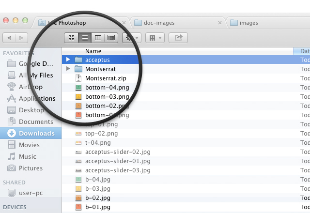
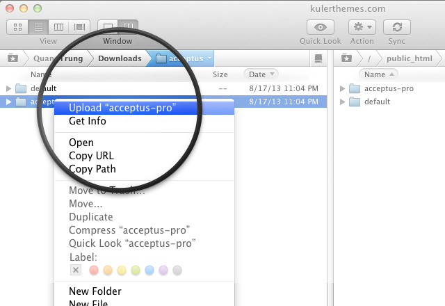
How to activate Acceptus?
Once you’ve installed Acceptus to your host, you need to make it your default store. Follow these steps:
- Open your browser, go to yourdomain.com/admin to get access to the OpenCart admin.
- Login with your admin user name and password.
- Choose System >> Settings in the menu tab in the OpenCart admin.
- Click Edit link in Your store (default) in the Settings page.
- In tab Store, choose Acceptus as your default store theme.
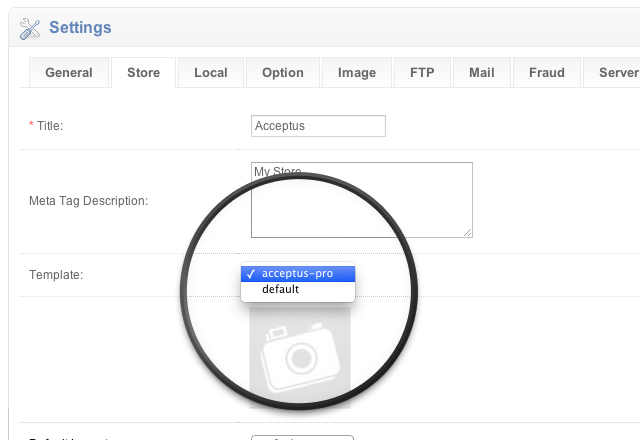
How to install our OpenCart modules?
In the installation file, you will see folder modules together with folder theme. There are 7 OpenCart modules enclosed in it including the following folders:
- kuleraccordion
- kuleradvancedhtml
- kulercp
- kulercss3slideshow
- kulernewsletter
- kulerslides
- kulersocialicons
- kulertabs
These ones are developed to support the theme functions. You need to install, activate and configure them.
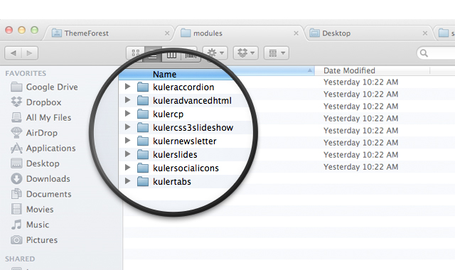
In this section, I will take Kuler Control Panel (Kuler CP) as a sample to instruct you how to install OpenCart modules to use with Acceptus. You do the same steps with the rest.
- Extract the file KulerCP.zip to folder.
- Open the folder and see two files admin and catalog
- Upload these files under the public_html folder of your hosting account (you can use FTP to upload)
- Go to your OpenCart Admin. Choose Extensions >> Modules and you will see Kuler CP in the module list.
- Click Install link on the right side of Kuler CP.
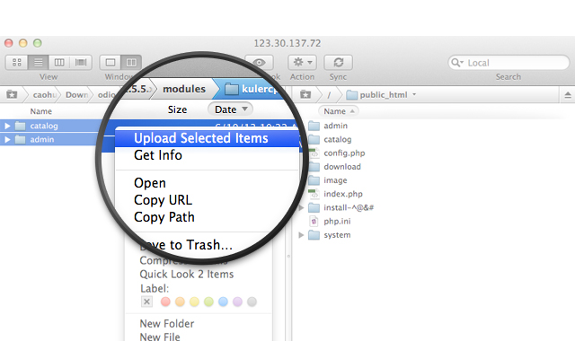
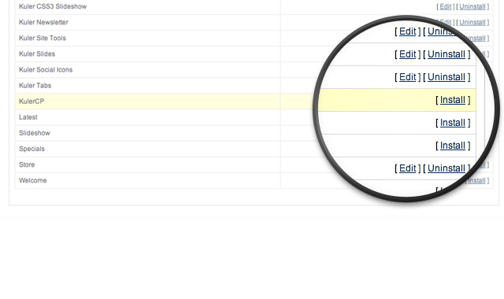
Kuler CP has been installed to your store. The next step is to configure the module, click Edit link and follow us on the next section.
How to configure the modules?
In this section, we will show you how to configure each of our modules to make it work with Acceptus. All guides will be provided in Videos convenience.
We give 7 OpenCart modules in total and you can find them all in the installation package.
Kuler Control Panel
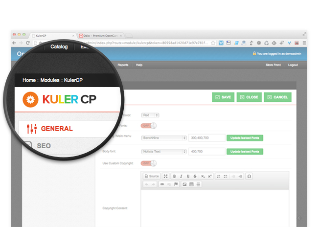
An easy-to-use control panel for OpenCart that helps you manage theme settings easily. You can use Google Fonts, display payment icons, and create your own copyright text. Also many unbelievable features are waiting to be discovered.
Kuler CSS3 SlideShow
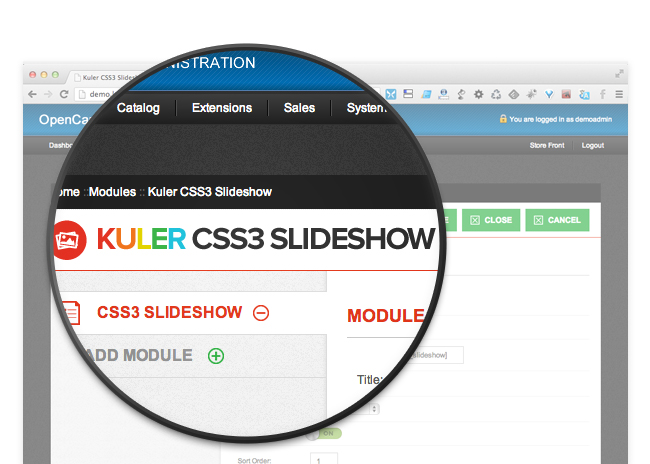
An OpenCart slider that captures visitors’ look right the moment they enter your store. Built based on CSS3 tech and also responsive, the slider is the best choice if you’re looking for a lighweight and stable image slider.
Kuler Accordion
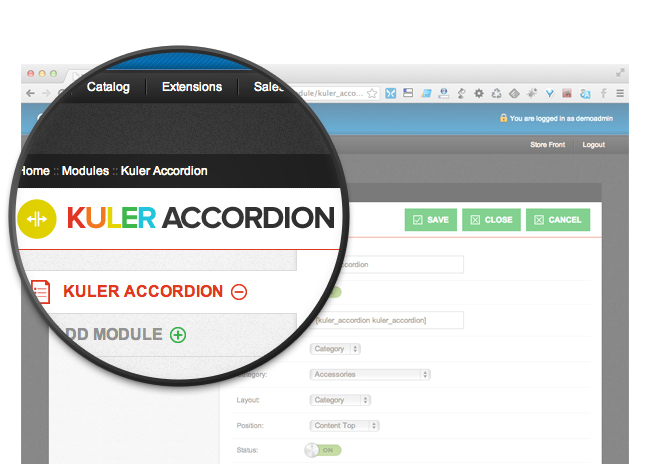
Kuler Accordion allows you to expand and collapse content panes nicely. You can use the module for either category page or product page, and then display it freely on your OpenCart site.
Kuler Tabs
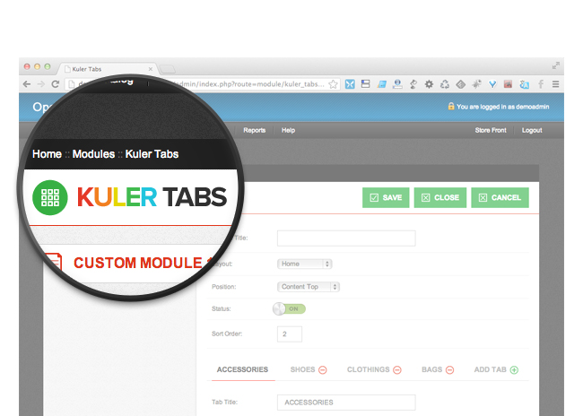
More choices for product display, Kuler Tabs helps you showcase a huge number of categories and products in nicely tab style.
Kuler Slides
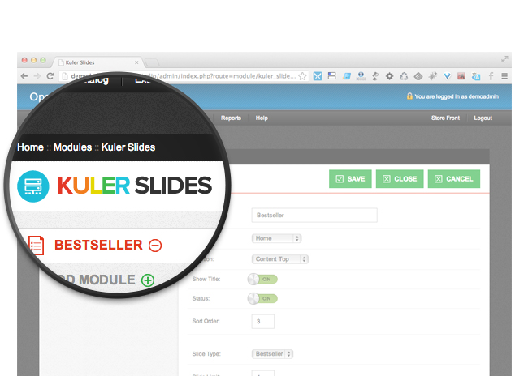
Similar to Kuler Tabs but in case you want to display your products in a responsive horizontal slider, Kuler Slides is the best choice for your store.
Kuler Newsletter
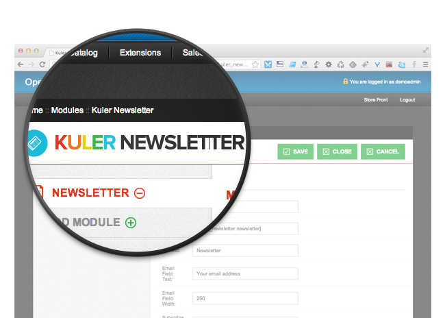
Provides an easy way for your visitors to sign up to your MailChimp list. Simply provides your MailChimp’s API key, choose an appropriate list and you’re ready to go.
Kuler Advanced HTML
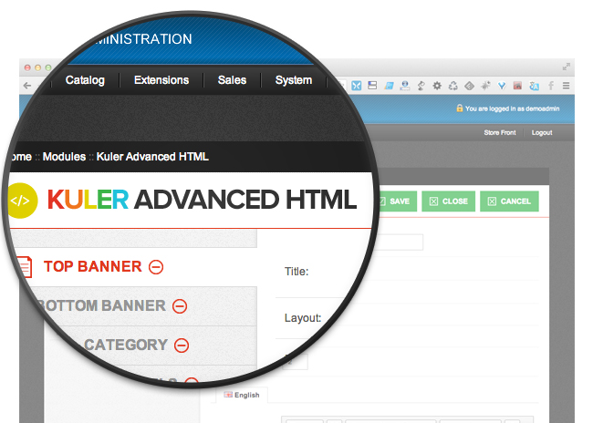
One of hottest Kulerthemes modules for OpenCart, it gives you ability to place 2 or more modules inside one HTML module and place it anywhere on your website.
How to update KulerThemes products?
Once you’re our customer, you’re free to update the purchased themes. We keep on updating our themes and integrating more modules to the themes monthly.
You can update by following these steps:
Step 1: Log in to our website kulerthemes.com
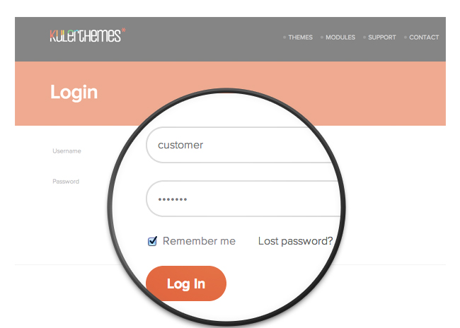
Step 2: Hover the PC Mouse on LOGIN button in your top right corner and you will see Product Download link. Open it.
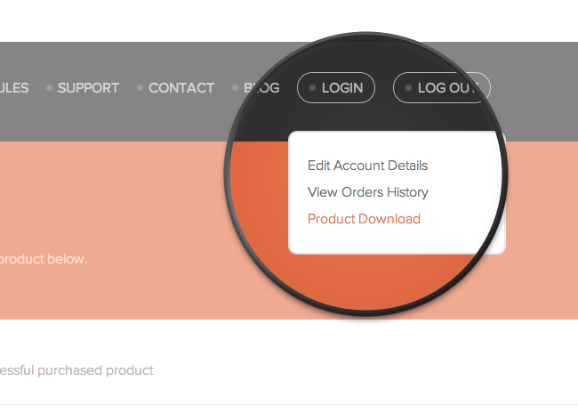
Step 3: Now you’re in the Product Download section already. Download the needed package to your computer and unzip it. For example, if you purchased Acceptus Pro, please download the package Acceptus Pro here.
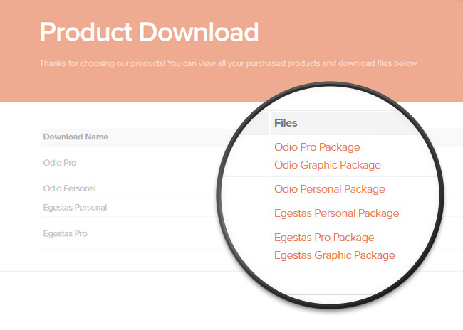
Step 4: Copy the installation file to overwrite your old file.
File structures
CSS Structure
- stylesheet.css - Main stylesheet
- colors.css - stylesheet for 6 predefined colors
- module-styles.css - stylesheet for additional modules
- responsive.css - stylesheet for tablet / mobile devices
- ie.css - stylesheet for IE8 and older
- popup.css - stylesheet for lightbox in product details page
- carousel.css - stylesheet for default carousel module
- slideshow.css - stylesheet for default slideshow module
Javascript Structure
- pop.js - javascript code for lightbox in product details page
- utils.js - javascript code for smooth scroll, ie detection and toggle
Sources and Credits
I've used the following images, icons or other files as listed:
- Easy Accordion by Andrea Cima Serniotti
- Magnific Popup by Dmitry Semenov
- CSS3 PIE by Jason Johnston
- Color Picker by Stefan Petre
- jQuery UI Nested Sortable by Manuele J Sarfatti
Wrap up
You’ve finished all installation with Acceptus and the modules.
For basic OpenCart Tutorials, please visit our OpenCart Tutorials series here:OpenCart Tutorials
How to start an online store with OpenCart?
To get support from us, please head to KulerThemes Support Forum or contact us by email contact@kulerthemes.com
Cheers!
KulerThemes